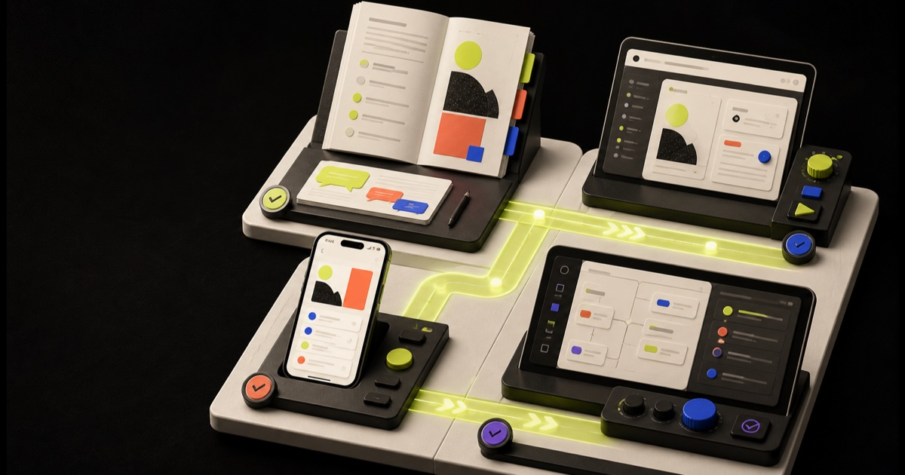

First iOS App With AI Sprint · 03
Run your first useful SwiftUI app—and recruit five beta testers.
Turn one small paid-use-case idea into a running native prototype, a verification checklist, and a beta plan in five focused days.
Mac + current Xcode required • No prior Swift mastery required • 14-day satisfaction guarantee

Day-five artifact: running app + verified core flow + 5 tester invitations
RequiredMac + Xcode
ScopeOne useful moment
Day-five outputRunning SwiftUI app
Market action5 beta invites
A generated screen is not a working product. Run it, test its states, and put it in a real user’s hands.
Beyond “vibe coding”
A clean build alone does not prove the app works.
Generated screens can look convincing while navigation breaks, errors disappear, data handling is unclear, purchases are untested, accessibility is absent, and App Review requirements are ignored.
This sprint defines a smaller finish line you can verify: one useful moment, a working core flow, explicit states, a monetization hypothesis, and five real testers.
What you will finish
A first native app with inspectable evidence.
A SwiftUI app that launches and completes one core task.
Loading, empty, success, and error behavior for the core flow.
A privacy/data inventory and monetization choice with assumptions.
Five beta invitations and a path to TestFlight and submission.
The scope method
One Screen / One Moment / One Reason-to-Pay.
AI accelerates drafting and debugging. You remain responsible for product judgment, data handling, code, testing, and submission.
- One userA person you can interview and recruit as a tester.
- One momentA recurring trigger where the current alternative is slow, confusing, or unpleasant.
- One screenThe smallest interface that produces the useful result.
- One proof loopRuntime test, edge states, user observation, and a logged change.
- One business hypothesisPaid download, subscription, in-app purchase, service lead, or portfolio proof—chosen deliberately.
Your five days
From one useful moment to a tested beta plan.
The finish line is a running app and verified next step—not a guaranteed five-day App Store launch.
Choose the user, moment, and paid hypothesis
Ship: one-screen brief + five tester names.
Create the project and UI shell
Ship: app launches in Simulator; layout adapts.
Implement the core flow
Ship: useful task completes with sample data.
Add states, boundaries, and monetization map
Ship: state matrix + privacy inventory + StoreKit plan.
Verify and recruit beta testers
Ship: runtime evidence + checklist + five invitations.
Everything included
Prompts plus the checks AI cannot own for you.
Build emails
Daily implementation tasks with a concrete acceptance check.
One-screen brief
Idea filter, user/moment framing, and AI-assisted SwiftUI prompts.
Runtime QA matrix
Navigation, loading, error, accessibility, and device checks.
Privacy inventory
Map collected, stored, transmitted, and third-party data.
Monetization worksheet
Compare one-time, subscription, in-app purchase, and service-led models.
Release-readiness map
TestFlight, App Review, screenshot, metadata, and launch steps in order.
Prerequisites and fit
Small scope, current tools, real verification.
You need a Mac capable of running a current supported Xcode release and enough storage for Xcode plus a Simulator runtime. App Store distribution requires an Apple Developer Program membership; verify current regional terms before launch.
A strong fit
You will keep the scope small, run and inspect the app after meaningful changes, and recruit people who experience the target moment.
Skip it for now
You need Windows-only development, expect guaranteed App Store approval, or plan to process sensitive data without appropriate expertise and controls.
14-day satisfaction guarantee
Inspect Day 1 and the project checklist. If the sprint is not clear and actionable, request a refund within 14 days. The guarantee does not cover Apple approval, rankings, downloads, revenue, or compatibility with unsupported hardware.
FAQ
The honest path from prompt to native product.
Do I need to know Swift?
No prior mastery is required, but you will learn enough to read the core flow, run the app, interpret errors, and verify changes. AI-generated code is still your responsibility.
Will the app be in the App Store on Day 5?
That is not promised. Enrollment, agreements, product setup, testing, privacy details, review, and fixes can take longer. Day 5 finishes a running app and a verified path forward.
How can the app make money?
The sprint helps you choose and test a model. Revenue depends on problem quality, retention, pricing, distribution, review, and execution.
Can AI build the whole app?
AI can draft code and accelerate debugging. It cannot take responsibility for scope, data, quality, accessibility, security, purchases, or store claims.
Do I need a paid Apple developer account?
A free account can support learning and some device testing. Distribution requires program membership. Check Apple’s current official terms for your region before committing.
Your next five days
Do not start with the dream app. Start with one useful moment.
Run it. Test its states. Put it in five people’s hands. Then let the evidence tell you what deserves to become a product.